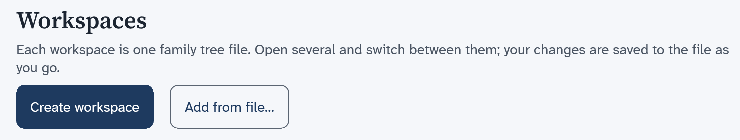
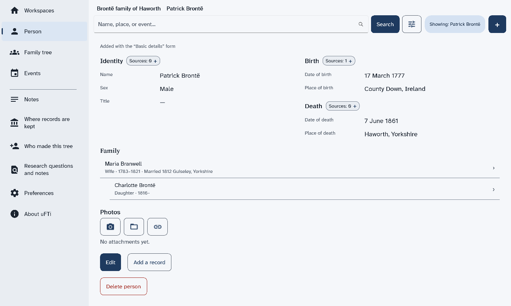
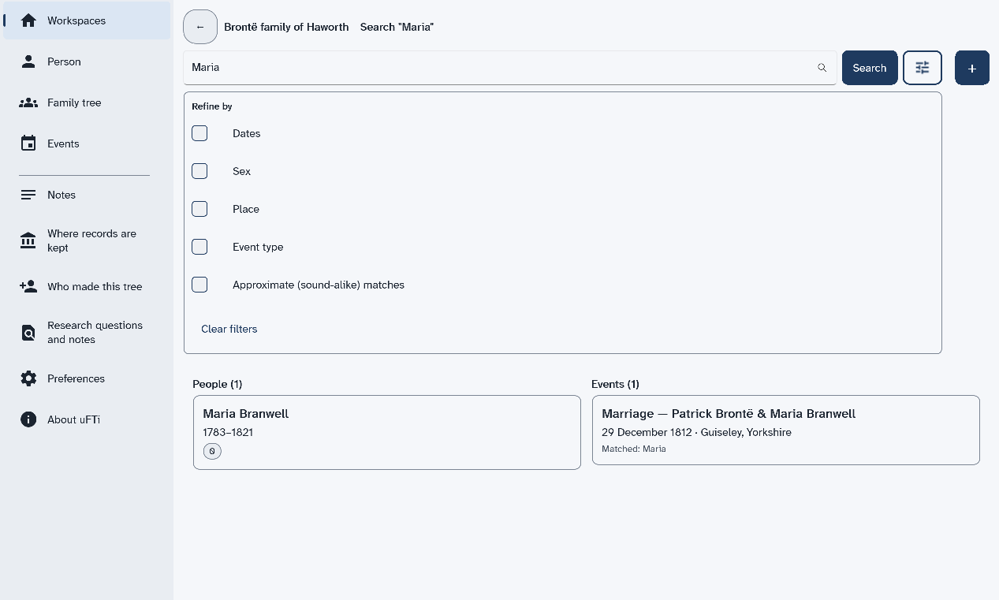
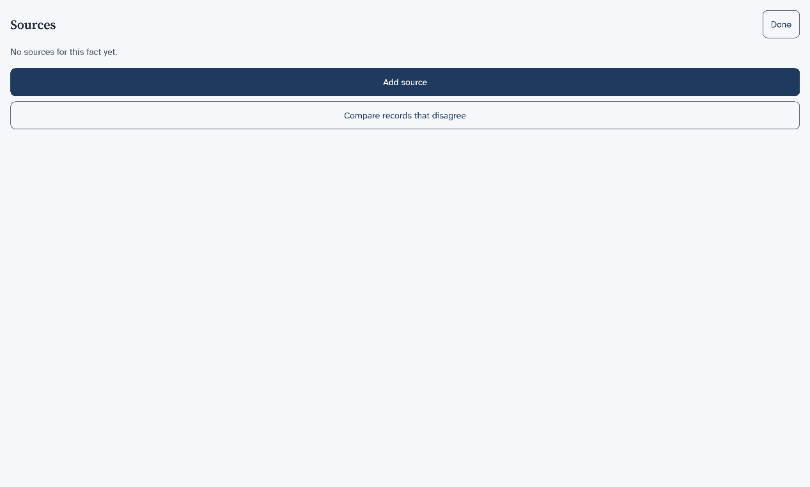
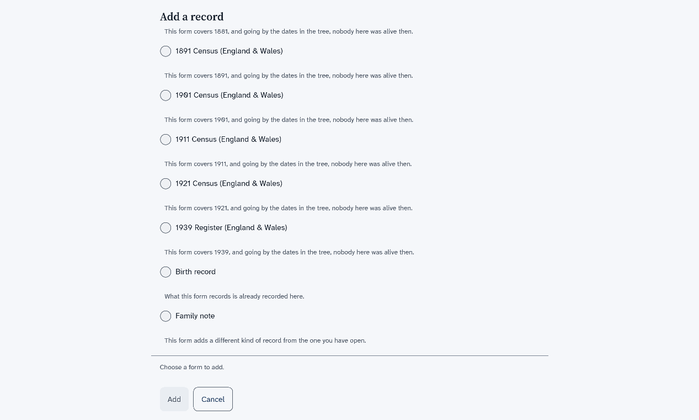
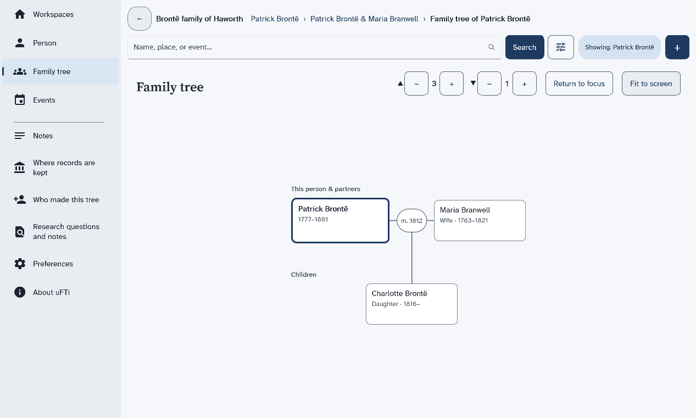
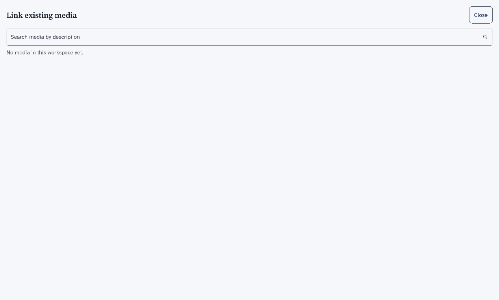

Quick Start
Six short pages that take you from opening uFTi to your first person, with its source and a copy.
This takes about ten minutes. Each page has a few steps. Do them in order.
Understanding family tree information
Oughtibridge Ltd
© 2026 Oughtibridge Ltd
This publication is available at https://docs.ufti.com/windows/Alpha-1/
Six short pages that take you from opening uFTi to your first person, with its source and a copy.
This takes about ten minutes. Each page has a few steps. Do them in order.
Get uFTi from the Microsoft Store, then open it for the first time.
You need a PC with Windows 10 (version 1809 or later) or Windows 11. It can be an x64 PC or an Arm64 PC.
uFTi is an app for the desktop. It comes in English (UK) and Spanish, and it uses the language of Windows.
A workspace is one family tree.
This is where your trees live. The first time, uFTi also opens a sample tree: the Brontë family of Haworth. Use it to look around. You do not need it.
If you have used uFTi on this PC before, or through OneDrive, your own trees open instead.

If the Microsoft Store is blocked on your PC, ask the person who looks after it to let you use it.
Next: Add your first person.
Make your own workspace and add yourself, or someone you know well.
That is your first person. uFTi saves your work as you go.

Next: Look around.
See what the main menu items show for the person you added.
Add a person first.
The menu at the left shows the main places. Most of them show the person you are looking at.
The other menu items are for later. To go back one screen, choose the back arrow.

Next: Say where you found it.
Add a source to a fact, so you always know why you believe it.
Open the page of a person who has a birth date.
The fact now has a source. Later, when two records disagree, this is how you will know what to believe.

Next: Keep it safe.
Save a copy of your tree as a file, and keep it somewhere else too.

The box named Which version of GEDCOM? offers GEDCOM 7 (recommended) and GEDCOM 5.5.1 (for older programs). Choose the first unless a program you use is old.

Windows opens your Documents folder first. Choose the folder you want, then choose Save.
A message names the file and its folder. It stays until you choose it.

You now have a copy. Make a new one after you add a lot. Keep one on another drive too.
Next: What next.
You have a tree, a person, a fact with its source and a copy, so choose where to go from here.
Well done. What do you want to do now?
The five ideas behind uFTi, in two minutes.
You can have more than one. Each shows as a card on the Workspaces screen. Make a new workspace for each tree.
Add a person for each relative. A family joins a couple. uFTi draws a tree from your families. Choose Family to see it.
A fact is something you record, such as a birth with its date. A source is where you found it. It can be a certificate, a census page, or what someone told you. A small chip beside each heading on a person's page counts the sources. Choose the chip to add one. Then you will always know why you believe a fact.
uFTi saves your work as you go. To keep a copy, choose Save as… on your workspace's card. Keep the file somewhere else too. Do it again after a big session.
Look in this guide when you are stuck. Use its search box, and type the words you would say. Practise in a workspace you make for the purpose.
Find people, add people and families, read their events and sources, and write notes.
This chapter is for everything you do once a tree is open. It starts with a picture of every screen. Then it shows how to find a person, how to read what the app knows about them, and how to add more. Each page has a few steps and a picture of the result.
The pictures use one small tree: the family of Patrick Brontë of Haworth, a village in Yorkshire. You can build it yourself, a little at a time, as you read.
What each item in the menu at the left shows, with a picture of each screen.
The menu stays at the left of every screen. Some items show your whole tree. Others show one person, the person named in the chip that starts with Showing. The chip is empty until you open someone. It clears again if you remove that person's tree.
| Menu item | What it shows | Needs a person |
|---|---|---|
| Workspaces | Your family trees, one card for each. | No |
| Person | The page of one person. | Yes |
| Family tree | A drawing of the person with parents, partners and children. | Yes |
| Events | The things that happened in that person's life. | Yes |
| Notes | Your own notes about that person. | Yes |
| Where records are kept | The archives, libraries and websites your sources come from. | No |
| Who made this tree | The people credited with the tree. | No |
| Research questions and notes | Your list of questions and ideas. | No |
| Preferences | The colours and the light or dark look. | No |
| About uFTi | The version of the app and facts about your computer. | No |
Select a personor
No person selected, it needs a person first. Search for someone, then open them. A page says no person is selected shows how.
This is the first screen. Each card is one family tree. It tells you how many people, families and events the tree holds. Open a family tree file and Remove a tree from the list start here.

This is one person's page: their names, their birth and death, their family and their photos. Find a person shows how to open it.

See a family tree explains the tree. See the events of a person explains the list of events.

Notes are your own words about a person. Add a note to a person shows how to write one.

These three pages list things that belong to the whole tree. Each is empty until you add something with +. The first one lists the places where your sources are kept.


Choose how the app looks explains the choices on this page.

Search your tree by a name, a place or an event, then open the person you want.
The search box is at the top of every screen. It searches the tree that is open.
Now Family tree, Events and Notes in the menu all show that person.
To narrow the results, choose the button with the sliders next to Search. A list named Refine by opens. Tick Dates, Sex, Place or Event type to add a filter. Tick Approximate (sound-alike) matches to also find names that sound alike. Choose Clear filters to start again.

Next: See a family tree.
Draw the parents, partners and children of one person.
Open a person first. Find a person shows how.
Choose Return to focus to go back to the first person. Choose Fit to screen to see the whole drawing at once. A button such as +5 siblings
means more brothers and sisters are not drawn. A big family may go past the edge of the screen.
The same tree is the pedigree in older manuals.
List what happened in a person's life, such as birth, marriage and death, and open any one.
Open a person first. Find a person shows how.
Each event has a line with its name, its date and its place. The small number at the right counts the sources for it.
To add an event, choose Add event under the list.
See which books and records back up a birth, a death or another fact, and change or remove one.
Each fact on a person's page has a small chip that counts its sources. A chip that says Sources: 0
means nothing backs that fact up yet. Every count of sources uses the same words, so you see them on a person's card in search results and on the Notes page too.
You are back on the page of the person. The chip shows the new count.
A fact with no source shows a short list with the same two buttons. Compare records that disagree is for two records that give different answers.

Next: Add another person.
Add a person to a tree that already has someone in it.
The first person comes with a new tree. After that, you add people with +.
To open the new person, Find a person.
The list ends with More forms. Choose it to see the forms that do not fit this person. Each one has a line under it that says why. For example, This form covers 1881, and going by the dates in the tree, nobody here was alive then.

Next: Add a family with children.
Correct a name, a date or a place on a person's page.
Open the person first. Find a person shows how.
Your changes are saved to the file as you go. The page shows the new words.
Join two partners, record their marriage and add their children.
Add both partners first. Add another person shows how.
Choose View family tree to see the family drawn out.

The page of the family also has Edit and Delete family. Next: Add a note to a person.
Write down something you know about a person that does not fit in a date or a place.
Open the person first. Find a person shows how.
The note shows under Notes, with Edit and a button to delete it.
The note belongs to that person. Write what you know. Say where you read it if you can.
Next: Open a family tree file.
What the three buttons under Photos do on a person, an event or a source.
A person's page, an event and a source each have a part named Photos. It has three round-cornered buttons in a row. Under them, the page says No attachments yet
until you add a picture.

Which file to send says which file to send to family, and whether the pictures go with it.
Pick a colour theme, and a light or dark look, for this computer.
These settings are for this computer only. They do not change your family tree files.
The page shows two groups of choices.
The change shows at once. The app keeps your choice the next time you open it.
What to do when Events, Notes or Family tree ask you to pick a person first.
You choose Family tree, Events or Notes. The page says Select a person
or No person selected
.
These pages show one person at a time. You have not opened anyone yet, or you removed the tree that the person came from. The chip that starts with Showing names nobody.
The page is empty because nothing has been added to the tree yet. Where records are kept, Who made this tree and Research questions and notes start empty.
What your workspace holds, why a GEDZIP file is the one to keep and send, and when a plain family tree file is better.
Your tree is more than one file. It is the family tree, its research notes, and the pictures and other files you attach. This chapter says what uFTi does with a file you open, how to keep a copy safe, and which file to send.
The short answer is the GEDZIP file. It holds your whole workspace in one file. Keep your work in a GEDZIP file, and send a GEDZIP file to anyone who also uses uFTi.
A plain family tree file is for older programs only. It leaves out your pictures and other attached files.
Your tree may have started in another program. Your family may want a copy. This chapter is for both.
A workspace is your family tree and its linked files, and a GEDZIP file holds all of them in one file.
A workspace is one family tree and everything kept with it. That is the family tree file, with its research notes, and the pictures and other files you attach to people, facts and sources.
The family tree file does not hold your pictures. It links to them, and the pictures stay in files of their own. The same is true of other attached files.
So if you send only the family tree file, the other person gets the tree and its links, but not the pictures.
A GEDZIP file puts the family tree file and all the files linked to it into one file. You send one file, and nothing is left behind. Another person who uses uFTi opens it and sees your whole workspace.
For that reason, a GEDZIP file is the one to keep and the one to share between copies of uFTi.
A plain family tree file holds the people, families, facts, sources and research notes. It does not hold the pictures or other attached files.
When you save one, uFTi asks which version of GEDCOM to use. Choose GEDCOM 7, which was published in 2021 and is the one it recommends. Choose GEDCOM 5.5.1, which was published in 1999, only for an older program that cannot read GEDCOM 7.
A GEDZIP file holds a GEDCOM 7 family tree file, with the pictures and other attached files beside it.
| File | The tree and its research notes | Pictures and other attached files | Use it to |
|---|---|---|---|
| GEDZIP file | Yes | Yes | Keep your work, and share it with another copy of uFTi. |
| Plain family tree file | Yes | No | Share with another program that reads GEDCOM, or work with one. |
New trees are saved in a folder named uFTi inside your Documents folder, and they stay there if you remove the app.
When you make a new tree, uFTi saves it in the folder Documents\uFTi on your PC.
The pictures that you add to a tree are saved in the folder Documents\uFTi\Media, beside your trees. They are kept in the same way.
Your trees are files in your own Documents folder. They are not part of the app. If you remove uFTi from your PC, your trees stay where they are.
Some PCs keep the Documents folder in OneDrive. If yours does, your trees go to OneDrive with the rest of that folder. They are kept up to date and copied between your PCs in the way OneDrive does that.
A tree that you open from another folder stays in that folder. Opened files and copies says what happens to it.
On a computer, uFTi works on the file you open, so make a copy first if you want the original left alone.
When you open a family tree file, uFTi works on that file. It does not make a copy for itself. It saves each change to the file you opened.
The file you open changes as you work. If you want the original left alone, work on a copy. Make the copy before you change anything. Then open the copy, and keep the original safe.
Choose Save as… on the card for your tree. uFTi asks how to save it, and where to put it, and then tells you where it went. Choose the GEDZIP file, unless you need a plain family tree file for an older program.
A copy made this way is a saved copy. It is a file of its own, and it stays as it was when you made it. uFTi does not move you to the copy. It keeps working on the file you opened. To work on the copy, open it.
uFTi also keeps other files beside your tree. It keeps a backup, an older copy of your tree, and makes it for you. Files beside your tree says what each one is.
Send a GEDZIP copy that you saved, and not one of the other files. Which file to send says why.
Bring a tree from another program, or a copy from a relative, into uFTi.
A family tree file ends in .ged or .gdz. uFTi also opens a .zip that holds one. Read Opened files and copies first if the file is the only copy you have.
The cards sit side by side. Choose a card to make that tree the open one. Choose Show details on a card to see which file it is.
Next: Keep it safe.
Take a tree off the Workspaces screen without deleting its file.
The card is gone. The file is still in its folder. Open it again with Add from file… at any time.
Send a GEDZIP file to anyone who uses uFTi, and a plain family tree file only to an older program.
To share your tree with someone who uses uFTi, save a copy as a GEDZIP file, and send that file. Keep it safe shows how to make one.
A GEDZIP file holds your whole workspace: the tree, its research notes, and the pictures and other attached files. It is one file, so you can attach it to an email or put it in a shared folder. Nothing is left behind, so the other person sees what you see. Your workspace and its files says more.
Some older programs cannot read a GEDZIP file. For them, save a plain family tree file instead. It holds the people, families, facts, sources and research notes, but not the pictures or other attached files. If the other person needs the pictures, send them as well.
Do not send the files that uFTi keeps beside your tree. The backup is an old version of your tree. Sending it sends an old tree. Files beside your tree says what each file is.
A saved copy stays as it was when you made it. Make a new one before you send, if you have added anything since.
The files you may see beside your tree: the tree itself and its backup.
When you open a family tree file, you may see more files beside it. uFTi makes the extra files for you. You do not need to open them or change them.
| File | What it is | Send it to family? |
|---|---|---|
| Your tree, such as Brontë family.ged | The file you opened. uFTi saves your changes to it. | Send a GEDZIP copy instead. |
| The backup. Its name is the name of your tree, with the word backup, the date and the time added in brackets. | An older copy of your tree. uFTi makes one the first time it saves after you start the app. | No. It is an old version. |
You may see more than one backup, because uFTi makes a new one each time you start the app and save. A backup is a family tree file too, so you can open one if you need your older tree.
A GEDZIP file, which ends in .gdz, holds the whole workspace in one file. It is the file to keep and to send. If you open a GEDZIP file, uFTi works on that file, and its backup is a GEDZIP file too.
Your tree may also link to pictures and other files. They are separate files, and a GEDZIP file holds them with the tree. Your workspace and its files says more.
To make the copy that you send, choose Save as… on the card for your tree. Which file to send says more.
An older copy of your family tree file, which the app makes for you. It is made the first time the app saves after you start it.
Something you record about a person, such as a birth with its date and place.
A GEDCOM file that holds a whole family tree, with its people, families, facts, sources and research notes. It does not hold pictures or other attached files. You can open one, save one and send one.
The standard format for family tree files. Many family tree programs read it. GEDCOM 5.5.1 was published in 1999. It has been the common format for more than twenty years. GEDCOM 7, published in 2021, is the newer version. A version belongs to the standard, not to uFTi.
One file that holds a whole workspace. It has the family tree with its research notes, and the pictures and other files. It is the best way to save and send your work.
A family tree drawn for one person. It shows their parents above them, and their partners and children.
A copy of your tree that you save yourself, as a GEDZIP file (preferred) or a family tree file. It stays as it was when you made it.
Where you found a fact. It can be a certificate, a census page, a book, or what someone told you.
One family tree and everything kept with it. That is the family tree file with its research notes, and the pictures and other files you attach. A GEDZIP file holds all of it. You can have more than one.